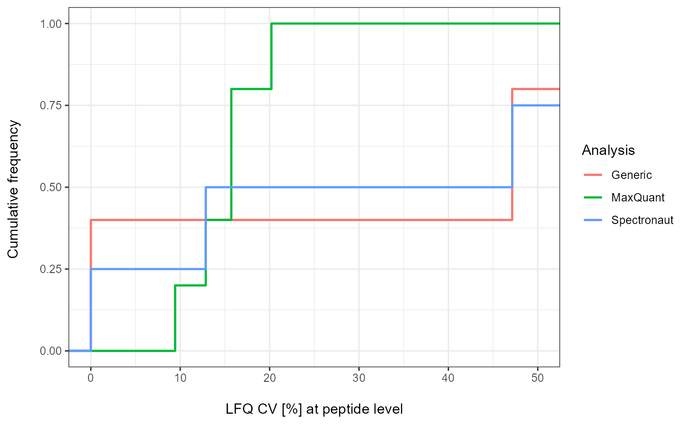
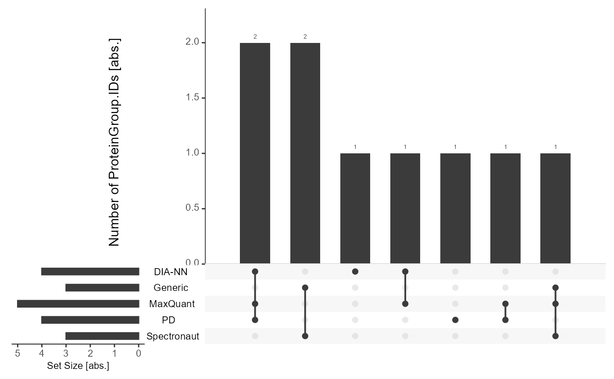

Workflow
Workflow.RmdIntroduction
This vignette is a workflow template for data import and downstream analysis with mpwR including highlighting number of identifications, data completeness, quantitative and retention time precision etc. It demonstrates significant steps and showcases functions and applicability.
Import
Import your data
Importing the output files from each software can be performed with
prepare_mpwR. Please put all output files in one folder and
follow the guidelines for naming the files. No other files/subfolders
are allowed. Details are provided in the vignette Import.
files <- prepare_mpwR(path = "Path_to_Folder_with_files")Examples
Some examples are provided to explore the workflow with
create_example.
files <- create_example()Number of Identifications
Report
The number of identifications can be determined with
get_ID_Report.
ID_Reports <- get_ID_Report(input_list = files)
For each analysis an ID Report is generated and stored in a list. Each ID Report entry can be easily accessed:
flextable::flextable(ID_Reports[["DIA-NN"]])Analysis |
Run |
ProteinGroup.IDs |
Protein.IDs |
Peptide.IDs |
Precursor.IDs |
|---|---|---|---|---|---|
DIA-NN |
R01 |
5 |
5 |
5 |
5 |
DIA-NN |
R02 |
5 |
5 |
5 |
5 |
Plot
Individual
Each ID Report can be plotted with plot_ID_barplot from
precursor- to proteingroup-level. The generated barplots are stored in a
list.
ID_Barplots <- plot_ID_barplot(input_list = ID_Reports, level = "ProteinGroup.IDs")
The individual barplots can be easily accessed:
ID_Barplots[["DIA-NN"]]
Summary
As a visual summary a boxplot can be generated with
plot_ID_boxplot.
plot_ID_boxplot(input_list = ID_Reports, level = "ProteinGroup.IDs")
Data Completeness
Report
Data Completeness can be determined with get_DC_Report
for absolute numbers or in percentage.
DC_Reports <- get_DC_Report(input_list = files, metric = "absolute")
DC_Reports_perc <- get_DC_Report(input_list = files, metric = "percentage")
For each analysis a DC Report is generated and stored in a list. Each DC Report entry can be easily accessed:
flextable::flextable(DC_Reports[["DIA-NN"]])Analysis |
Nr.Missing.Values |
Precursor.IDs |
Peptide.IDs |
Protein.IDs |
ProteinGroup.IDs |
Profile |
|---|---|---|---|---|---|---|
DIA-NN |
1 |
0 |
0 |
4 |
2 |
unique |
DIA-NN |
0 |
5 |
5 |
3 |
4 |
complete |
Plot
Individual
Absolute
Each DC Report can be plotted with plot_DC_barplot from
precursor- to proteingroup-level. The generated barplots are stored in a
list.
DC_Barplots <- plot_DC_barplot(input_list = DC_Reports, level = "ProteinGroup.IDs", label = "absolute")
The individual barplots can be easily accessed:
DC_Barplots[["DIA-NN"]]
Percentage
plot_DC_barplot(input_list = DC_Reports_perc, level = "ProteinGroup.IDs", label = "percentage")[["DIA-NN"]]
Summary
As a visual summary a stacked barplot can be generated with
plot_DC_stacked_barplot.
Absolute
plot_DC_stacked_barplot(input_list = DC_Reports, level = "ProteinGroup.IDs", label = "absolute")
Percentage
plot_DC_stacked_barplot(input_list = DC_Reports_perc, level = "ProteinGroup.IDs", label = "percentage")
Missed Cleavages
Report
A report for Missed Cleavages can be generated with
get_MC_Report for absolute numbers or in percentage.
MC_Reports <- get_MC_Report(input_list = files, metric = "absolute")
MC_Reports_perc <- get_MC_Report(input_list = files, metric = "percentage")
For each analysis a MC Report is generated and stored in a list. Each MC Report entry can be easily accessed:
flextable::flextable(MC_Reports[["Spectronaut"]])Analysis |
Missed.Cleavage |
mc_count |
|---|---|---|
Spectronaut |
0 |
1 |
Spectronaut |
1 |
1 |
Spectronaut |
2 |
1 |
Spectronaut |
3 |
1 |
Plot
Individual
Absolute
Each MC Report can be plotted with plot_MC_barplot from
precursor- to proteingroup-level. The generated barplots are stored in a
list.
MC_Barplots <- plot_MC_barplot(input_list = MC_Reports, label = "absolute")
The individual barplots can be easily accessed:
MC_Barplots[["Spectronaut"]]

Retention Time Precision
Preparation
The coefficient of variation (CV) can be calculated with
get_CV_RT. Only complete profiles are used.
CV_RT <- get_CV_RT(input_list = files)
Plot
As a visual summary a density plot for all analyses can be accessed
via plot_CV_density.
plot_CV_density(input_list = CV_RT, cv_col = "RT")
Quantitative Precision
Peptide-level
Preparation
The CV can be calculated with get_CV_LFQ_pep. Only
complete profiles are used.
CV_LFQ_Pep <- get_CV_LFQ_pep(input_list = files)
#> For DIA-NN no quantitative LFQ data on peptide-level.
#> For PD no quantitative LFQ data on peptide-level.
Plot
As a visual summary a density plot for all analyses can be accessed
via plot_CV_density.
plot_CV_density(input_list = CV_LFQ_Pep, cv_col = "Pep_quant")
Proteingroup-level
Preparation
The CV can be calculated with get_CV_LFQ_pg. Only
complete profiles are used.
CV_LFQ_PG <- get_CV_LFQ_pg(input_list = files)
#> For PD no quantitative LFQ data on proteingroup-level.
Plot
As a visual summary a density plot for all analyses can be accessed
via plot_CV_density.
plot_CV_density(input_list = CV_LFQ_PG, cv_col = "PG_quant")
Upset Plot
Common identifications and intersections between analyses can be highlighted.
Preparation
Use get_Upset_list to prepare for Upset plotting.
Upset_prepared <- get_Upset_list(input_list = files, level = "ProteinGroup.IDs")Plot
The Upset plot can be generated with plot_Upset.
plot_Upset(input_list = Upset_prepared, label = "ProteinGroup.IDs")
Inter-software Comparison - flowTraceR
Functions of the package flowTraceR are incorporated in mpwR for inter-software comparisons. Software outputs are standardized and easily comparable.
Precursor-level without flowTraceR
Without standardizing the precursor-level information, the software outputs only form software-dependent cluster.
get_Upset_list(input_list = files, level = "Peptide.IDs") %>% #prepare Upset
plot_Upset(label = "Peptide.IDs") #plot
Precursor-level with flowTraceR
By enabling flowTraceR the precursor-level information is standardized and common identifications can be inferred.
get_Upset_list(input_list = files, level = "Peptide.IDs", flowTraceR = TRUE) %>% #prepare Upset
plot_Upset(label = "Peptide.IDs") #plot
#> flowTraceR not available for generic input. No conversion applied for position 5 in input_list.
Summary
mpwR offers functions to summarize the downstream analysis.
Report
A summary report can be generated with
get_summary_Report.
Summary_Report <- get_summary_Report(input_list = files)Plot
As a visual summary a radar chart for all analyses can be accessed
via plot_radarchart.
Overview
plot_radarchart(input_df = Summary_Report)Details
To highlight individual categories, the generated summary report can be easily adjusted and used for plotting.
#Focus on Data Completeness
Summary_Report %>%
dplyr::select(Analysis, contains("Full")) %>% #Analysis column and at least one category column is required
plot_radarchart()